Chapter 9 · Part 1 — Master of the Animals
The sabertooth forward.
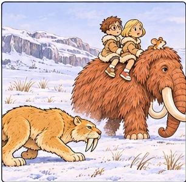
Jack in horror.
“Play the ,” Annie.
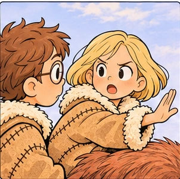
Is nuts? Jack thought.
“Try!” Annie.
Jack the mammoth- to his lips. He blew.
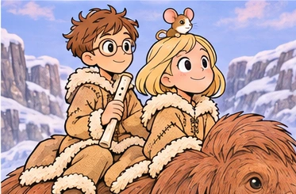
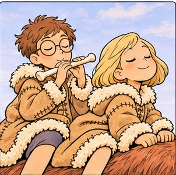
The made a sound.
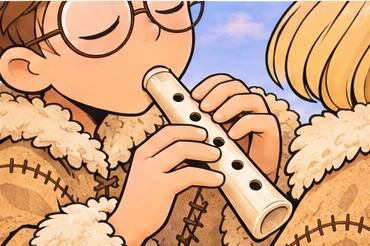
The tiger . He glared at Jack.

Jack’s hands .
The tiger . He took another step.
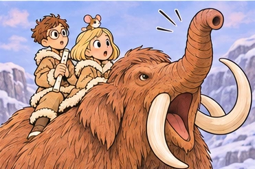
The mammoth and stomped the ground.
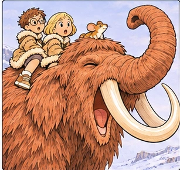
“Play it!” Annie. “Keep playing!”
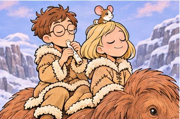
Jack again.
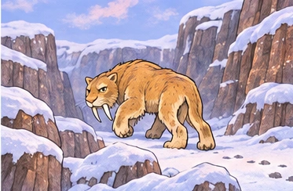
The sabertooth again.
Jack kept blowing until he out of breath.
The tiger .
“He’s still here,” Annie. “Keep it up.”
Jack closed his eyes. He took a breath. Then he blew as hard and as long as he could. He and uncovered the holes on the bone.
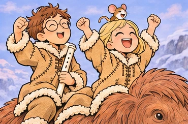

The music sounded —as if it were coming from another world.
“He’s leaving!” Annie .
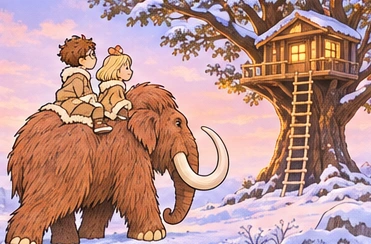
Jack raised his eyes. The sabertooth was off toward the .

“We did it!” Annie.
Jack lowered the . He felt very tired.
The mammoth waved her happily.
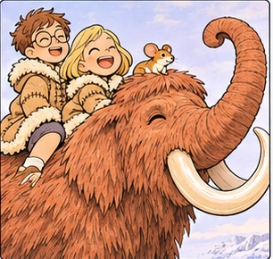
“To the tree house, Lulu,” Annie.
The woolly mammoth snorted. she lumbered over to the tallest tree.
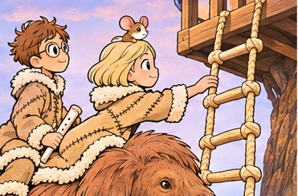
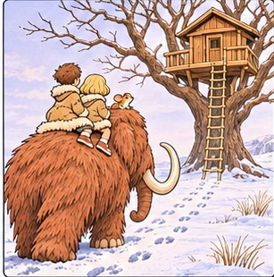
From the back of the mammoth, Jack the . He held it for Annie.
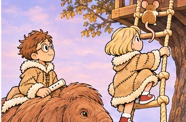
She stroked the mammoth’s giant ear. “Bye, Lulu. Thank you,” she .
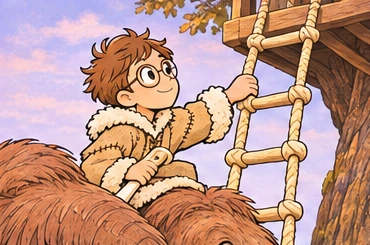
Annie grabbed the rope . Then she started up. Peanut climbed up, too.
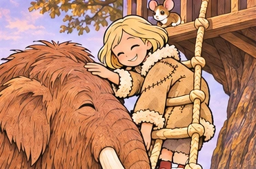

After they disappeared into the tree house, Jack climbed onto the .
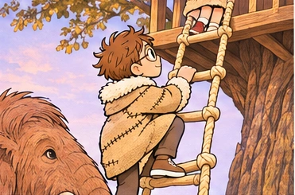
He back at the woolly mammoth. “Bye, girl,” he said. “Go home now. And watch out for the sabertooth.”
The mammoth walked away into the .
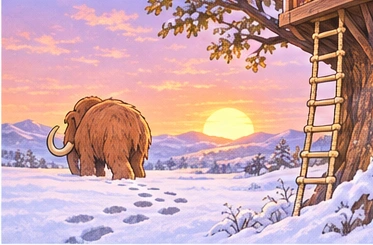
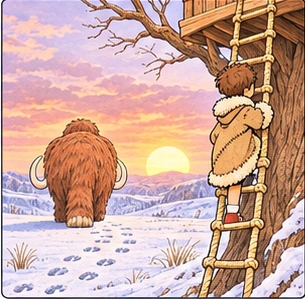
When Jack couldn’t see her anymore, he started up the lope ladder. He himself into the tree house.
“Ta-da!” Annie. She handed the Pennsylvania book to Jack.

Jack smiled. Now he was positive they had found the third M thing. Their was .
“Before we leave, we have to give our back,” said Annie.
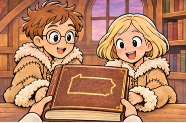
“ right,” said Jack.
They took off their -skin coats and dropped them to the ground.
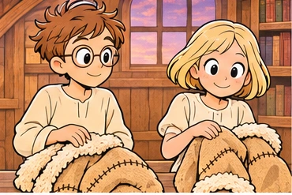
“Brrr!” Annie. “I hope the Cro-Magnon people find them.”
Jack out the window. He wanted to take one last look at the prehistoric world.
The sun was setting behind the hills. Four people were crossing the snowy . It was the Cro-Magnon family.
“Hey!” Annie.
“Shhh!” Jack.
The Cro-Magnons stopped and in Annie and Jack’s direction.
“We left your ! Down there!” Annie to the ground.
The tallest person forward and raised a spear.

“Time to ,” said Jack.
He the Pennsylvania book. He found the picture of Frog Creek and pointed at it. “I wish we could go home,” he said.
“Good-bye! Good luck!” Annie , waving out the window.
The wind to blow. And the tree house started to spin.
It faster and faster.
Then everything was .
Absolutely .